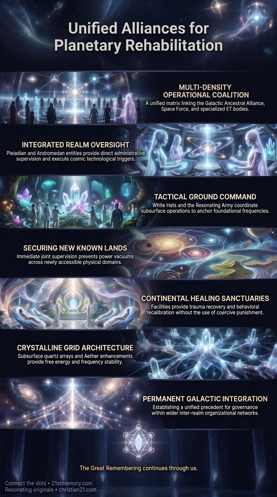

Healing Sanctuaries
Healing Sanctuaries — Alliance-managed continental rehabilitation centers address trauma, moral inversion, and behavioral distortions without injury or coercion.
A unified GAA, Space Force, 2nd Realm ET, White Hat, and Resonating Army coalition administers the New Known Lands through non-punitive healing sanctuaries and territorial stabilization.
Test your understanding of Organizational Alliances — GAA, Space Force, 2nd Realm ETs, and continental healing sanctuaries.

Healing Sanctuaries — Alliance-managed continental rehabilitation centers address trauma, moral inversion, and behavioral distortions without injury or coercion.

Stabilizing the Massive New Known Lands — Joint GAA, Space Force, and 2nd Realm ET supervision secures newly unveiled territories after the third-realm dome dissolves.
Organizational Alliances represent a unified, multi-entity operational coalition designed to back, coordinate, and execute global governance, territorial supervision, and structural stabilization across expanded physical domains. Composed of both off-world and terrestrial bodies, this alliance matrix brings together the Galactic Ancestral Alliance (GAA), the terrestrial Space Force, specialized 2nd Realm ETs—including Pleiadians and Andromedans—and covert ground-level networks such as the White Hats and the Resonating Army. Operating within an all hands on framework, these combined forces take command of newly accessible regions following planetary dimensional shifts, establishing systematic oversight and specialized healing sanctuaries across all continents.
Rather than enforcing centralized control through authoritarian leverage, this alliance matrix executes administrative functions anchored in empathy, energetic stabilization, and non-injurious oversight. By integrating high-density extra-dimensional intelligence with advanced terrestrial defense infrastructure, the coalition secures newly unveiled geographical territories, manages population recalibration, and neutralizes remnant parasitic influences. This collaborative apparatus serves as the primary organizational engine for planetary rehabilitation, ensuring that every individual receives structured guidance, trauma recovery, and energetic harmonization during the transition process.
The establishment of Organizational Alliances reveals a synchronized administrative paradigm designed to handle complex planetary transitions without institutional collapse or coercive subjugation. A central truth of this alliance structure is its multi-density composition: cosmic entities like the GAA and 2nd Realm ETs operate in complete operational alignment with Earth-based entities such as Space Force and the White Hats. This eliminates the historical division between terrestrial security systems and extra-terrestrial oversight, creating a seamless hierarchy of protection and guidance.
Furthermore, the coalition operates on a policy of universal inclusion and non-punitive governance. Oversight within the New Known Lands is specifically tailored to heal rather than punish. Compulsive behaviors, jealousy, greed, and deep-seated psychological trauma are treated within dedicated continental facilities under controlled, safe conditions where no individual is harmed, pushed around, or killed. The alliance framework ensures that remaining populations, regardless of their prior behavioral or moral state, are provided with the structural control and energetic support necessary to achieve personal restoration and unified integration.
The coalition functions through a clearly delineated division of operational responsibilities among its constituent bodies:
Galactic Ancestral Alliance (GAA): Functions as the supreme backing body, providing macro-level coordination, energetic alignment, and institutional support across all participating extra-realm and terrestrial factions.
Space Force: Serves as the primary terrestrial defense partner, supplying ground security, logistical support, and operational backing to maintain order across newly revealed geographical zones.
2nd Realm ETs (Pleiadians and Andromedans): Exercise direct administrative oversight over the New Known Lands. These entities direct key technological triggers, including the activation of the Aether, solar flash sequences, and the opening of dimensional portals. Specialized Pleiadian personnel, such as Barron, actively interface with ground elements to execute long-term timeline strategy.
White Hats and Ground Command: Execute sub-surface tactical operations, neutralize residual parasitic systems, and coordinate with key leadership figures to ensure public transition plans roll out without interruption.
Resonating Army: Anchors high-vibrational frequencies across the human collective, serving as an decentralized operational support system that stabilizes local environments during major shifts.
Upon the collapse of third-realm artificial barriers and the exposure of the New Known Lands, the alliance deploys an all hands on strategy distributed across global continents. Inhabitants requiring behavioral or psychological recalibration are allocated to specialized healing sanctuaries according to their specific trauma profiles. Oversight within these centers is structured around firm boundaries—termed "a bit of control"—to prevent chaotic disruption while strictly prohibiting tyranny, verbal abuse, physical injury, or death.
All administrative actions are backed by advanced technological infrastructure. The coalition utilizes implanted quartz crystal grid arrays, custom Aether atmospheric enhancements, and plasma crystalline conductors to supply free energy and maintain frequency stability across all continental sectors. This technological integration ensures that material scarcity and environmental stress are eliminated, allowing administrative personnel to focus entirely on collective healing and structural unification.
Organizational Alliances operate as the tactical execution arm of broader Supervisory Oversight systems. While Supervisory Oversight defines the overarching mandate to monitor, stabilize, and guide Earth through its ascension cycle, the alliances convert this mandate into physical deployment, security enforcement, and medical-trauma infrastructure.
Laterally, these organizational bodies are intrinsically linked to temporal operations and technological grid deployments. Utilizing Project Looking Glass time-travel capabilities, members of the alliance—including Pleiadian operatives and terrestrial allies—jumped forward into future timelines prior to the transition to implant millions of quartz crystals beneath the Earth's surface. These crystals act as conductive memory tech and EMP grid anchors, which are subsequently triggered by solar flashes initiated by 2nd Realm ETs. The alliance matrix thus connects extra-dimensional technology, historical time-manipulation, and real-time territorial administration into a single interconnected operational loop.
The deployment of Organizational Alliances carries decisive strategic consequences for planetary governance and collective ascension:
Prevention of Power Vacuums: By placing the New Known Lands under the immediate joint supervision of Space Force, the GAA, and 2nd Realm ETs, the alliance prevents warlords, rogue factions, or residual negative entities from exploiting newly exposed landmasses.
Systemic Behavioral and Energetic Recalibration: The replacement of traditional punitive judicial frameworks with continental healing sanctuaries ensures that human trauma is systematically resolved, converting low-vibrational populations into integrated, harmonized members of society.
Permanent Integration into Galactic Governance: The successful joint operation between terrestrial military bodies and cosmic alliances establishes a permanent precedent for Earth's post-transition governance, cementing its position within wider inter-realm organizational networks.
This topic is free to share. Support the archive →